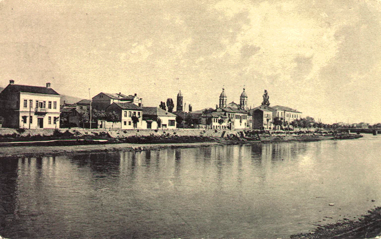
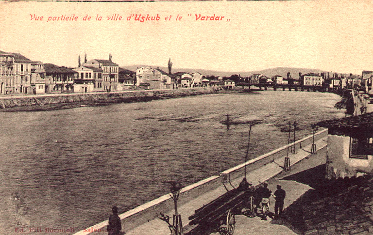
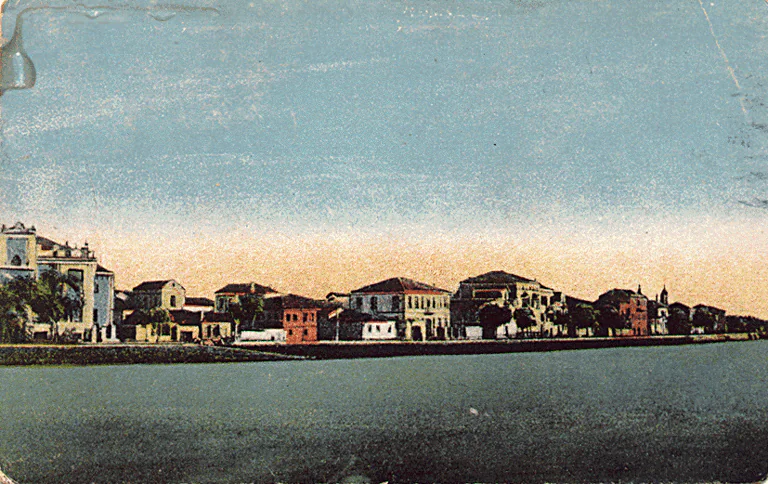
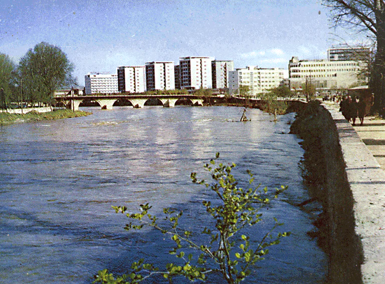

На реке Вардар
- Сценарий
- Димитрие Османли, Симон Дракул
- Камера
- Киро Билбиловски
- Год
- 1964
- Продолжительность
- 00:16

Набережная «13 Ноября» - 1888 год.

Водяная мельница в верхнем течении Вардара - конец XIX века.

Хотя эта открытка сильно повреждена, она вошла в коллекцию, потому что относится к концу XIX - началу XX века и на ней видны здания, которых нет ни на одной другой открытке. Справа Оттоманский банк. На переднем плане старый платан, на котором в 1689 году было повешено тело Карпоша. Над ним возвышается Скопская крепость - Кале. Крайний слева виден фрагмент Каменного моста.

Вид на обе набережные Вардара - начало XX века.

Скопье в 1902 году - вид с Каменного моста на деревянный мост. У Вардара уже есть стены набережных. Видны жилые и общественные здания. Справа на снимке турецкий театр, а слева, в самом начале, мечеть Бурмали. На заднем плане здание банка и старая почта.

Вид на деревянный мостик, старый турецкий театр и часть Скопской крепости - Кале. (начало XX века)

Вид с правого берега Вардара на Скопскую крепость - Кале. (начало XX века).

Вид на левый берег Вардара (набережная «Димитар Влахов») - начало XX века. В стене набережной виден устье реки Серава.

Деревянный мост до постройки железного моста. На заднем плане Каменный мост и мечеть Бурмали. (конец XIX века)

Начало XX века. Оттоманский банк, Скопская митрополия и здания на левом берегу Вардара, сразу за Каменным мостом. На переднем плане старый платан.

Вид на левый берег Вардара с церковью Св. Мины (с двумя куполами) и церковью Св. Богородицы (на заднем плане, с одним куполом). - начало XX века.

На переднем плане здание суда и старая школа, а на заднем плане видны купола церкви Св. Мины - начало XX века.

Вид на обе набережные Вардара - начало XX века.

Левый берег Вардара - набережная «Димитар Влахов» с Оттоманским банком, Митрополией и двумя куполами церкви Св. Мины на заднем плане. (начало XX века)

Левый берег Вардара - набережная «Димитар Влахов» между Каменным и Железным мостами, с жилыми домами. (начало XX века)

Снимок сделан с Каменного моста около 1910 года. Слева виден старый турецкий театр, а над ним Скопская крепость - Кале.

Левый берег Вардара с еврейским кварталом и на заднем плане Скопская крепость - Кале. (1910 год)

Снимок сделан с Каменного моста около 1910 года. Слева виден старый турецкий театр, а над ним Скопская крепость - Кале.

Скопье во время наводнения 1916 года. Вода дошла до зданий. Справа видно, как часть здания обрушилась из-за наводнения.

Скопье после 1918 года. Обе набережные Вардара как продольные магистрали, важные для развития города. На заднем плане виден Каменный мост с мечетью Бурмали. Видна активная застройка набережной зданиями разнообразной архитектуры, близкой к европейской школе.

Скопье перед Балканской войной. Набережная на правом берегу Вардара. На заднем плане видны мечеть Бурмали и Каменный мост. На переднем плане русское консульство и другие здания. Архитектура испытала влияние европейской архитектурной школы, с элементами классического, академического и псевдоклассического стиля.

Вид на правый берег Вардара со зданиями банка и старой почты между Каменным мостом и деревянным мостиком - начало 1920-х.

Вид на левый берег Вардара. На переднем плане здание суда и старая школа, а на заднем плане видны купола церкви Св. Мины. Справа от неё церковь Св. Богородицы. - 1920-е.

Вид на правый берег Вардара со зданиями банка и старой почты между Каменным мостом и деревянным мостиком - начало 1920-х.

Правый берег Вардара перед Каменным мостом. Слева видны здание банка и старая почта. Справа на открытке виден деревянный мостик - около 1920 года.

Вид на правый берег Вардара со зданиями банка и старой почты между Каменным мостом и деревянным мостиком - начало 1920-х.

Часть левого берега Вардара - примерно место нынешнего здания Македонского радио и телевидения. Виден минарет мечети Вардар-теке (построенной в начале XVI века) - начало 1920-х.

Часть левого берега Вардара - примерно место нынешнего здания Македонского радио и телевидения. Виден минарет мечети Вардар-теке (построенной в начале XVI века) - начало 1920-х.

Вид на правый берег Вардара перед Каменным мостом. Средняя часть набережной. Слева видны здания банка и старой почты. Справа на открытке деревянный мостик - около 1920 года.

Скопье - часть площади. Слева видна часть Каменного моста, справа - участок до строительства Народного банка. Набережная устроена как проезжая улица. На заднем плане справа видна мужская гимназия.

Скопье - часть площади. Слева видна часть Каменного моста, справа - участок до строительства Народного банка. Набережная устроена как проезжая улица. На заднем плане справа видна мужская гимназия. - 1930-е

Набережная «Димитар Влахов» - левый берег Вардара. - начало 1920-х

Вид с Каменного моста на памятник павшим борцам и Оттоманский банк. - 1920-е.

Панорама Скопье, точнее левой набережной Вардара с частью еврейского квартала, Пайко-махалой и Каменным мостом. - 1920-е

Вид на Скопье из Офицерского дома в сторону еврейского квартала. - 1920-е.

Вид на правый берег Вардара с жилыми домами. На заднем плане видны Каменный мост и строительство Офицерского дома. (около 1925 года)

Скопье, 1930-е. Вид на обе набережные. На переднем плане старая школа и здание суда, а сразу за ними видны две колокольни церкви Св. Мины. На заднем плане виден Офицерский дом до строительства Народного банка. Снимок сделан с Железного моста.

Набережная на правом берегу Вардара перед Каменным мостом. На переднем плане жилой дом с лавками на первом этаже и входами в пассаж «Ароэсти», построенный в 1920-е годы как небольшой торговый центр с ремесленными и торговыми лавками. (При катастрофическом землетрясении 1963 года здесь погибло много людей.) На заднем плане видны Земледельческий банк, Офицерский дом, Народный банк и Каменный мост. (1930-е)

Набережная «13 Ноября» с жилыми домами, частью Каменного моста и Офицерским домом - 1920-е.

Вид на набережную «13 Ноября» на правом берегу Вардара, Каменный мост и Офицерский дом - снимок около 1927 года.

Часть площади перед Каменным мостом и оба берега Вардара. Слева на заднем плане видны церковь Св. Мины с двумя куполами и чуть левее церковь Св. Богородицы. Набережная благоустроена, с электрическим освещением и зеленью. (1925-1930 годы)

Правый берег Вардара, от деревянного мостика к парку - 1930-е.

Набережная «13 Ноября». Вид на Каменный мост и Офицерский дом - конец 1930-х.

Набережная на левом берегу Вардара перед Каменным мостом с жилыми домами еврейского квартала. На заднем плане виден Оттоманский банк - около 1930 года.

Вид с Каменного моста через Вардар на деревянный мостик и оба берега реки. Справа Народный театр, слева здание банка и старая почта. - 1930-е

Вид на район «Буняковец». Русло Вардара укреплено земляными дамбами. - 1930-е

Левый и правый берег Вардара. Снято с Каменного моста. Средняя часть набережной по обе стороны Вардара. - около 1930 года

Правый берег Вардара. Набережная «13 Ноября». - около 1930 года

Скопье, 1930-е. Вид с Железного моста через Вардар на обе набережные, застроенные жилыми и общественными зданиями. На переднем плане справа старая школа, здание суда и две колокольни церкви Св. Мины. На заднем плане Офицерский дом и Народный банк.

Вид на набережную «13 Ноября» на правом берегу Вардара, Каменный мост и Офицерский дом - снимок около 1930 года.

Вид на обе набережные Вардара и железный мост. - 1950-е

Вид на обе набережные Вардара и бетонный мост. - 1950-е.

Правый берег Вардара за каменным мостом, снятый до катастрофического землетрясения 26 июля 1963 года. На заднем плане видны Офицерский дом и Народный банк.

Набережная на правом берегу Вардара. Деловой и жилой комплекс «Башни на Вардаре» (архитектор Александар Серафимовски). Снимок сделан в 1960-е годы, до катастрофического землетрясения 26 июля 1963 года.

Правый берег Вардара с Каменным мостом, башнями у Вардара и Гранд-отелем «Скопье», снятый сразу после катастрофического землетрясения 26 июля 1963 года и до регулирования русла Вардара, выполненного в 1965-1968 годах.

Вид на правый берег Вардара. Арка на переднем плане - часть каменного моста; снимок 1950-х годов.

Вид с левого берега Вардара на Каменный мост. На заднем плане видны Башни на Вардаре. - 1970-е

Вид на нынешний главный почтамт - Телекоммуникационный центр (построен в 1974-1980 годах, архитектор Янко Константинов) и набережную перед ним.

 Акведук4 открытки
Акведук4 открытки Кале30 открыток
Кале30 открыток Мосты60 открыток
Мосты60 открыток Набережная58 открыток
Набережная58 открыток Площадь46 открыток
Площадь46 открыток Здания66 открыток
Здания66 открыток Христианские храмы19 открыток
Христианские храмы19 открыток Мусульманские здания33 открытки
Мусульманские здания33 открытки Офицерский дом29 открыток
Офицерский дом29 открыток Театр28 открыток
Театр28 открыток Железнодорожный вокзал13 открыток
Железнодорожный вокзал13 открыток Школы36 открыток
Школы36 открыток Парки12 открыток
Парки12 открыток Рынки18 открыток
Рынки18 открыток Улицы38 открыток
Улицы38 открыток Панорама I60 открыток
Панорама I60 открыток Панорама II30 открыток
Панорама II30 открыток Коллажи55 открыток
Коллажи55 открыток Наводнения9 открыток
Наводнения9 открыток Землетрясение27 открыток
Землетрясение27 открыток Скопье 200026 открыток
Скопье 200026 открыток